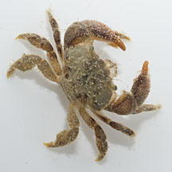
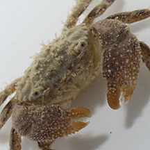

|
|
| crabs text index | photo index |
| Phylum Arthropoda > Subphylum Crustacea > Class Malacostraca > Order Decapoda > Brachyurans > Family Pilumnidae |
| Rubble-carrying
crab Actumnus setifer Family Pilumnidae updated Dec 2019 Where seen? Only the odd movement of coral rubble gives away the presence of this little crab that carries around a piece of rubble. It lives on rubble and reefs. Elsewhere, the crab has been seen to carry live and dead corals weighing up to 1kg! The crab has also been observed to excavate holes in fixed and immobile live or dead corals, soft stones or sponges. Features: Body width 2-3cm. Body oval, body and legs covered with velvety hairs, but is not as hairy as the Common hairy crab. It has stout pincers, one larger than the other, both covered in bead-like bumps. If the piece of coral is overturned, the crab will turn it back the right way and scuttle back into its hiding place. The crab moves around by holding the rubble with its back legs and pushing agains the ground with its pincers. Crab castle: Inside the rubble, the crab excavates a castle! Besides the entrance on the underside of the rubble is a feeding chamber, leading up via a tunnel to a place for it live, and with 8-12 small openings to the outside of the rubble probably used by the crab to detect food. |
 Chek Jawa, Jul 13 |
 Chek Jawa, Jul 13 |
 Chek Jawa, Jul 13 |
| Rubble-carrying crabs on Singapore shores |
On wildsingapore
flickr
|
| Other sightings on Singapore shores |
1 Jun 2013 Video clip shared
by Marcus Ng on his
blog.
Video clip shared
by Marcus Ng on his
blog. |
Links
|